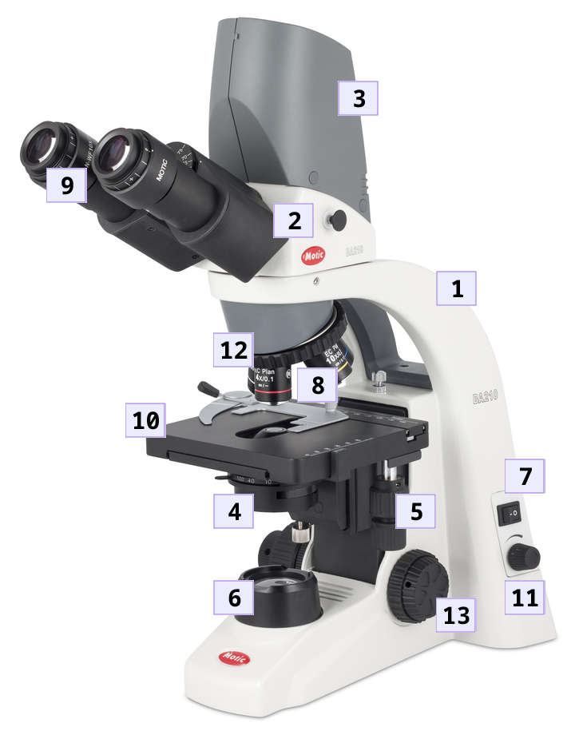

Partes de un microscopio
En esta página
3.2. Partes de un microscopio#
Parte |
Función |
|---|---|
|
Da estructura y soporte al microscopio, además de proporcionar un medio de sujeción cuando se transporta. |
|
Contiene los |
|
Toma fotografías de la muestra. No todos los microscopios cuentan con ella. |
|
Recolecta la luz emitida por la |
|
Mueve la |
|
Proporciona la |
|
Enciende y apaga el microscopio. |
|
Aumentan la imagen directamente de la muestra. |
|
Aumentan la imagen y permiten observar la muestra a través del microscopio. |
|
Sirve de soporte para el portaobjetos, que a su vez soporta a la muestra. |
|
Regula la intensidad de la luz que es emitida por la |
|
Sostiene los |
|
Mueven la |
3.2.1. Observaciones sobre las partes#
3.2.1.1. Oculares#
Además de permitir la observación de la muestra, los oculares proporcionan un aumento. Este aumento es —por lo general— de 10x, lo que significa que amplía la imagen que recibe diez veces. Los microscopios pueden venir con un par de oculares extra con un aumento superior a los 10x, como por ejemplo 15x, 20x, 25x, etc. No obstante, en la mayoría de las ocasiones se prefiere trabajar con los 10x, ya que —por razones de física y óptica— son los que proporcionan la mayor calidad de imagen, además de que este nivel de aumento suele ser suficiente para trabajar con la mayoría de las muestras de interés.
Los oculares trabajan en conjunto con los objetivos —ubicados en el revólver— para determinar el nivel de magnificación total. Dicha magnificación es el producto del aumento de los oculares por el aumento del objetivo en uso:
Es decir, si se emplean oculares de 10x con un objetivo de 40x lo que se obtiene es una imagen magnificada 400 veces:
En este libro se asume el empleo de oculares 10x.
Además de lo anterior, cabe resaltar que algunos modelos de oculares ofrecen ciertas prestaciones (Figura 3.6), como la expansión del campo de visión y un sistema de enfoque de dioptrías (ver la sección [Cómo ajustar las dioptrías]).
{kind=link}
Figura 3.6 Oculares de 10 mm y un aumento de 20x, con capacidad de enfoque de dioptrías. El dibujo de las gafas en ellos indica que pueden utilizarse con ellas.#
3.2.1.2. Cámara fotográfica#
Algunos microscopios pueden venir con una cámara fotográfica ya instalada o, en su defecto, con un puerto especial y dedicado que permite la conexión a una. Si el microscopio que emplea no tiene cámara fotográfica o no cuenta con dicho puerto, aun así, podrá adquirir una y colocarla retirando uno de los oculares. Tenga en cuenta que se trata de un aditamento completamente opcional; no es necesaria ni indispensable para la observación.
Los parámetros a tener en cuenta con una cámara fotográfica incluyen: la cantidad de pixeles (expresados en megapixeles), la resolución y los cuadros por segundo (FPS).
Una alternativa al empleo de una cámara fotográfica es el uso de un soporte especial para teléfonos inteligentes, de esta forma podrá utilizar la cámara de su teléfono celular para la toma de fotografías y video.
Finalmente cabe mencionar que, para fotografías con propósito de investigación o enseñanza, lo ideal es guardarlas en formato TIFF, ya que este formato guarda las imágenes con la calidad original en que fueron tomadas y no tiene compresión, por lo que no presenta pérdida de información como sí ocurre con otros formatos; como el JPG, por ejemplo. Sin embargo, tenga en cuenta que las fotografías en formato TIFF son mucho más pesadas que aquellas en formato JPG o BMP. Una alternativa decente es el formato PNG.
Figura 3.7 Formatos de imagen de mayor a menor calidad (de izquierda a derecha).#
3.2.1.3. Objetivos#
Los objetivos son una de las piezas más importantes —y caras— del microscopio. Junto con los oculares determinan la magnificación total con la que la muestra puede ser observada. Los objetivos son, por mucho, las piezas que con mayor frecuencia son reemplazadas y actualizadas en un microscopio. Por lo general, los microscopios de gama baja vienen con tres objetivos, mientras que los de gama media y alta con cuatro —4x, 10x, 40x y 100x—. Sin embargo, microscopios especializados en investigación pueden llegar a contar con cinco o seis (4x, 10x, 20x, 40x, 60x, 80x, 100x, entre otros).
El contar con tres o cuatro espacios en el revólver no implica necesariamente que no pueda utilizar objetivos de otros aumentos. Siempre y cuando los objetivos sean compatibles con las características técnicas del microscopio, podrá reemplazar a voluntad uno o más de ellos, a fin de tener un dispositivo con la configuración que usted desee; por ejemplo: 10x, 20x, 40x y 60x.
Cabe aclarar aquí que —aunque las instrucciones de este libro pueden seguirse sin problemas con otras configuraciones— en las siguientes secciones se asume que se cuenta con una configuración de revólver estándar: 4x, 10x, 40x y 100x, y exactamente en ese orden. Lo anterior debido a que esta es la disposición más común y, por tanto, con la que usted se encontrará con mayor frecuencia.
Además del aumento, los objetivos pueden llegar a tener características especiales y distintivas que los hagan deseables por su mayor calidad —y por ende más costosos—. Por ejemplo, algunos objetivos pueden contar con corrección de imagen, como la plana; o ser especiales para ser utilizados con una técnica especial de imagen, como con la técnica de contraste de fases. Las características técnicas de los objetivos aparecen impresas en ellos.
Figura 3.8 Detalle de los oculares en el revólver.#
En la Figura 3.8 se aprecian objetivos con corrección plana. En los objetivos más económicos notará que, al enfocar la imagen, únicamente podrá conseguir nitidez en la parte central del área de observación. Al enfocar el centro verá que la parte circundante se desenfoca. En los objetivos de corrección plana, la imagen se enfoca completamente, del centro a los márgenes —claro, siempre y cuando la muestra no se encuentre en movimiento por estar viva y/o tenga gran profundidad—. Los objetivos planos son deseables si se quiere una calidad de imagen decente para la observación y la fotografía.
Debajo de la corrección de imagen, aparece inscrita en el objetivo el aumento que posee, así como una banda de color que siempre está asociada al mismo (el 4x siempre tiene una banda roja, el 10x siempre una amarilla, etc.).
El número que aparece a la derecha del aumento indica la apertura numérica —N.A. por sus siglas en inglés—. Este valor indica que tanta capacidad tiene el objetivo de recoger luz del condensador. En su caso, a menor número, mayor cantidad de luz. Eso significa que el objetivo de 4x (N.A. 0.10) es más luminoso que el 40x (N.A. 0.65), por ejemplo; por lo que al cambiar de aumento deberá ajustar la cantidad de iluminación a fin de ajustarse a las necesidades del objetivo y así conseguir una calidad de imagen óptima para el microscopio. Diferentes fabricantes pueden tener en su gama de productos objetivos más luminosos que otros para una misma cantidad de aumento, por lo que el valor de apertura numérica no es necesariamente una constante entre distintos objetivos.
Debajo del aumento del objetivo se indica —a grandes rasgos— si el microscopio funciona con un sistema óptico finito —en cuyo caso veríamos un valor numérico, como 160 mm—, o si lo hace con un sistema óptico al infinito —veríamos la abreviación Inf o el símbolo matemático del infinito (\({\infty}\)), tal y como ocurre en el caso de la imagen de ejemplo—. La diferencia entre ambos sistemas radica en la forma en que los rayos de luz viajan a través del sistema óptico del microscopio. En los que cuentan con un sistema óptico infinito la luz viaja de forma paralela, lo que permite introducir accesorios en la ruta de luz —como filtros, por ejemplo— sin producir aberraciones ópticas. Dado que el tipo de sistema varía dependiendo de la construcción del propio microscopio, no es posible utilizar objetivos infinitos en un microscopio con sistema óptico finito, y viceversa.
Finalmente, el número ubicado en la parte inferior derecha indica el grosor máximo que ha de tener el portaobjetos a fin de lograr la máxima calidad de imagen para el microscopio en particular que esté utilizando. Dicho valor suele ser de 1.7 mm (0.17), que es el estándar.
3.2.1.4. Platina#
Algunos microscopios —los de gama más baja o los muy antiguos— no cuentan con los controles de la platina, por lo que para desplazarse a través de la muestra deberá mover manualmente el portaobjetos, asegurándose de que el punto de interés pase por sobre el haz de luz que irradia el condensador (o la fuente de iluminación directamente, en caso de que el microscopio no cuente con condensador alguno).